Neutral Close-Grip Dumbbell Press
PettoSpingendo i manubri uniti con presa neutra verso l'alto, si stimola la parte interna del petto (inner chest).
12-15 ripetizioni × 3-4 serie | Riposo 45-60 secondi
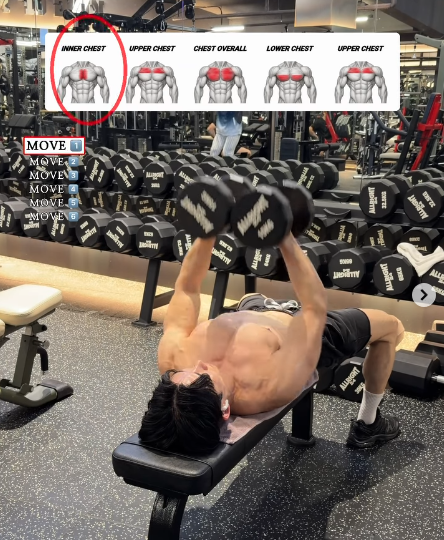
Incline Dumbbell Press
PettoSpingendo i manubri verso l'alto su una panca inclinata, si stimola la parte superiore del petto (upper chest).
12-15 ripetizioni × 3-4 serie | Riposo 45-60 secondi
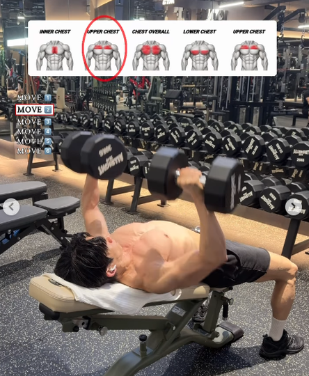
Standard Dumbbell Press
PettoAbbassando i manubri ai lati del petto su una panca piana e spingendoli verso l'alto, si stimola l'intero petto (chest overall).
12-15 ripetizioni × 3-4 serie | Riposo 45-60 secondi
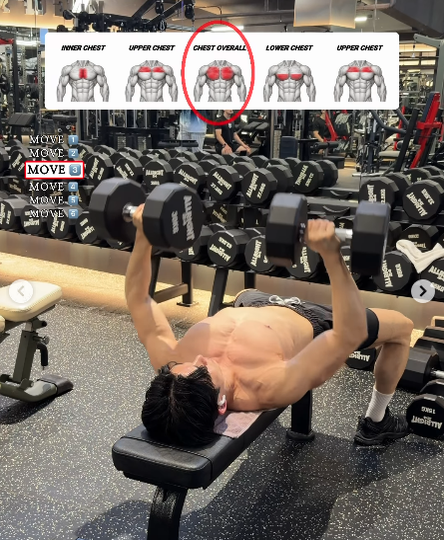
Dumbbell Fly
PettoAllargando le braccia per allungare e poi unendole, si stimola l'intero petto (chest overall).
12-15 ripetizioni × 3-4 serie | Riposo 45-60 secondi
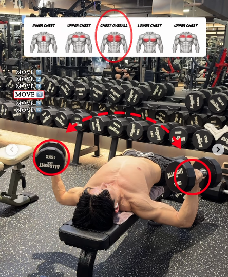
Dumbbell Pullover
PettoAbbassando il manubrio dietro la testa e portandolo sopra il petto, si stimola la parte inferiore del petto (lower chest).
12-15 ripetizioni × 3-4 serie | Riposo 45-60 secondi
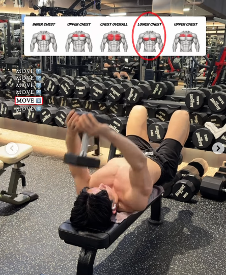
Reverse-Grip Dumbbell Press
PettoAfferrando i manubri con presa inversa e spingendoli verso l'alto, si stimola la parte superiore del petto (upper chest).
12-15 ripetizioni × 3-4 serie | Riposo 45-60 secondi
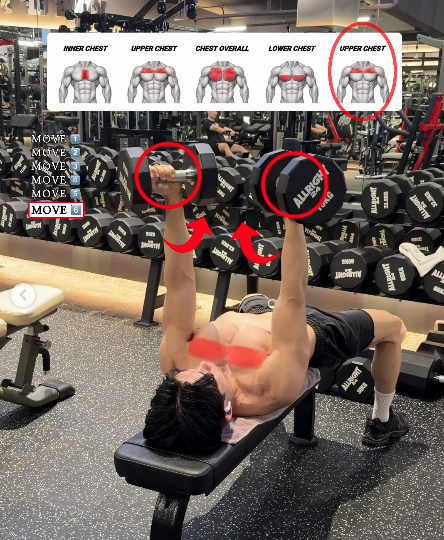
Dumbbell Bicep Curl
BicipitiFlessione delle braccia in piedi o seduti sulla sedia, eseguendo una supinazione (rotazione del polso verso l'esterno) durante la fase di salita.

Dumbbell Hammer Curl
BicipitiCurl a martello. Flessione delle braccia mantenendo i palmi delle mani sempre rivolti l'uno verso l'altro (presa neutra) durante tutto il movimento.

Alternating Dumbbell Curl
BicipitiCurl classico eseguito alternando in modo fluido il braccio destro e il braccio sinistro a ogni ripetizione.

Cross Body Hammer Curl
BicipitiIn piedi, afferra i manubri con presa neutra. Fletti un braccio portando il manubrio verso la spalla opposta, incrociando il petto. Ritorna lentamente alla posizione di partenza e alterna le braccia.
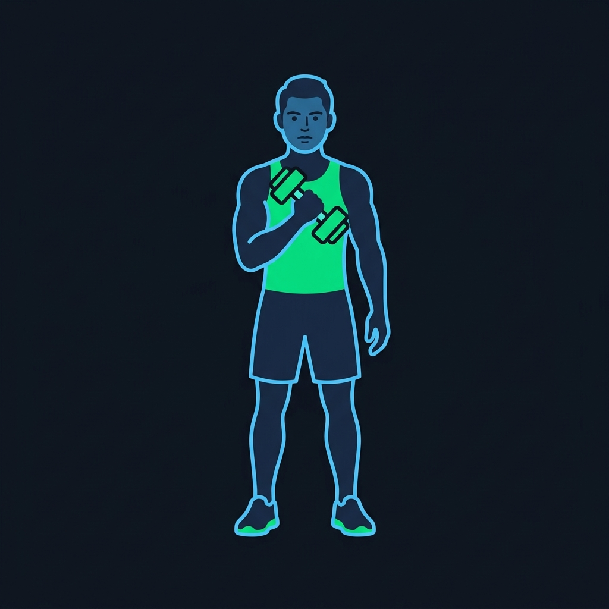
Incline Dumbbell Bicep Curl
BicipitiPanca a 45-60°. Seduto, esegui il classico curl con manubri. La posizione del braccio dietro la linea del busto garantisce il massimo allungamento del capo lungo del bicipite.
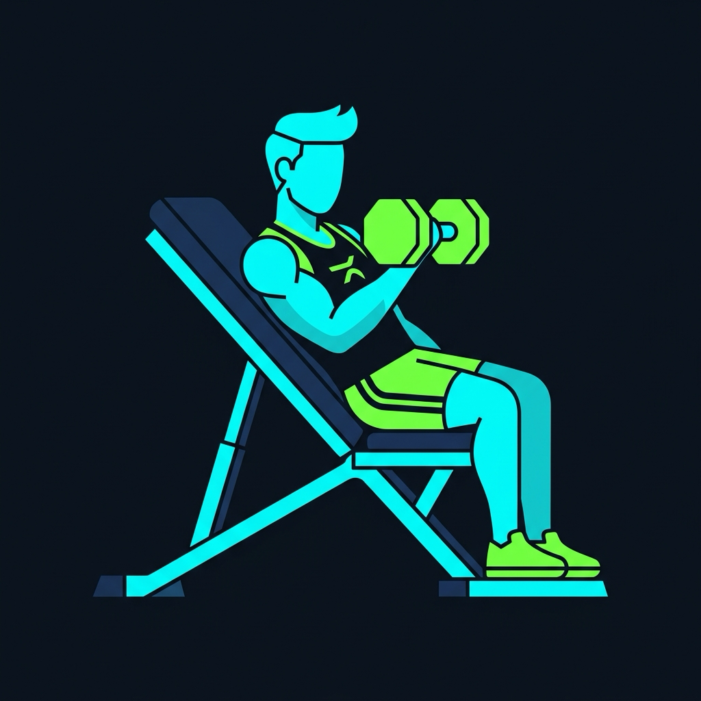
Triceps Overhead DB Extension
TricipitiEstensioni dietro la nuca su panca. Seduto sulla panca con schienale verticale a 90° per stabilizzare la schiena, afferra il manubrio con entrambe le mani sopra la testa. Fletti i gomiti portando il peso dietro la nuca per il massimo allungamento, poi distendi le braccia verso l'alto contraendo i tricipiti.
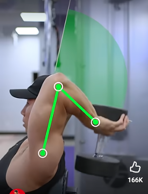
Dumbbell Tricep Kickback
TricipitiBusto flesso in avanti quasi parallelo al pavimento. Mantieni il braccio adeso al fianco e il gomito alto e immobile; estendi completamente l'avambraccio all'indietro.

Lying Dumbbell Triceps Extension
TricipitiSu panca piana. Sdraiato, tieni i manubri con le braccia tese verso l'alto. Piega solo i gomiti portando i pesi ai lati della testa, poi distendi verso il soffitto.
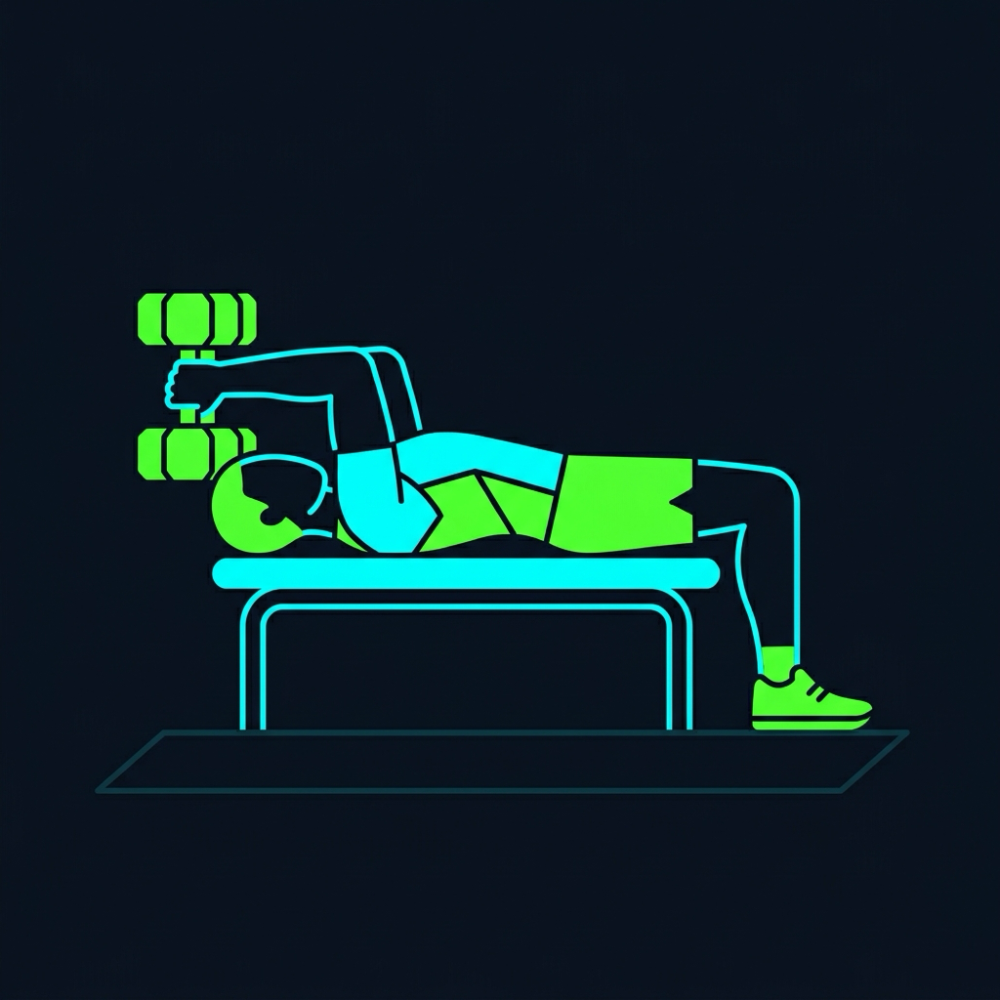
Seated Side Lateral Raise
SpalleSedendosi su una panca per bloccare il busto e sollevando i manubri lateralmente, si stimola il lateral delts.
12-15 ripetizioni × 3-4 serie | Riposo 60 secondi
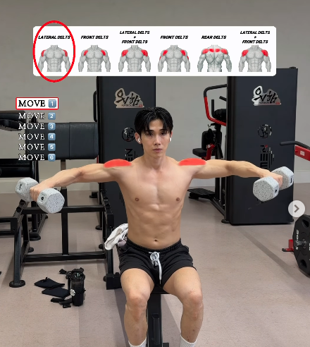
Seated Front Raise
SpalleSedendosi su una panca per bloccare il busto e sollevando i manubri in avanti fino all'altezza delle spalle, si stimola il front delts.
12-15 ripetizioni × 3-4 serie | Riposo 60 secondi
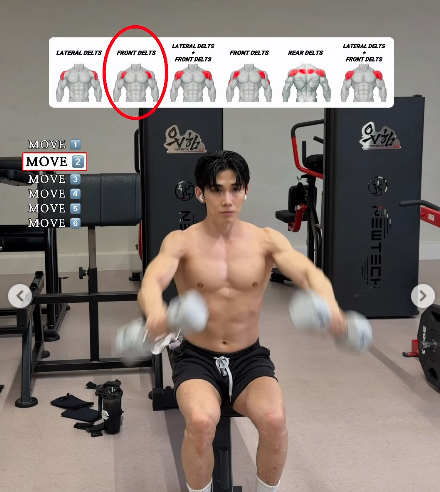
Seated Shoulder Press
SpalleFissando la schiena alla panca e spingendo i manubri dall'altezza delle spalle fin sopra la testa, si stimolano il front delts e il lateral delts.
12-15 ripetizioni × 3-4 serie | Riposo 60 secondi
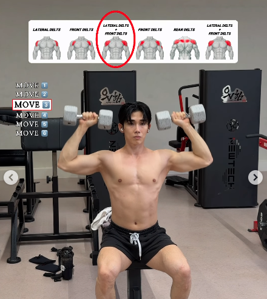
Seated Front Press
SpalleRiunendo i manubri davanti al petto e spingendoli in avanti e verso l'alto, si stimola il front delts.
12-15 ripetizioni × 3-4 serie | Riposo 60 secondi
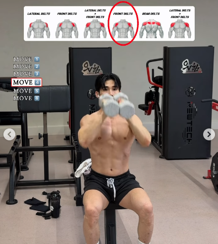
Seated Bent-Over Lateral Raise
SpalleInclinando il busto in avanti e sollevando i manubri lateralmente, si stimola il rear delts.
12-15 ripetizioni × 3-4 serie | Riposo 60 secondi
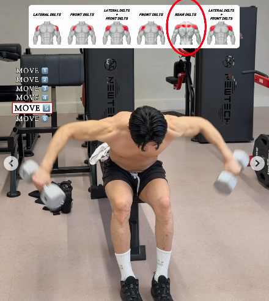
Seated Arnold Press
SpalleRuotando i manubri verso l'esterno partendo da davanti al viso e spingendoli sopra la testa, si stimolano il front delts e il lateral delts.
12-15 ripetizioni × 3-4 serie | Riposo 60 secondi
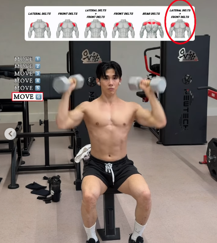
Dumbbell Bent-Over Row
DorsoRematore bilaterale. In piedi con il busto flesso in avanti a 45° e ginocchia leggermente piegate. Tira entrambi i manubri contemporaneamente verso la pancia mantenendo i gomiti stretti.

One-Arm Dumbbell Bench Row
DorsoAppoggia un ginocchio e la mano dello stesso lato sulla panca piana. Con la schiena parallela al pavimento, tira il manubrio verso l'anca opposta portando il gomito in alto.
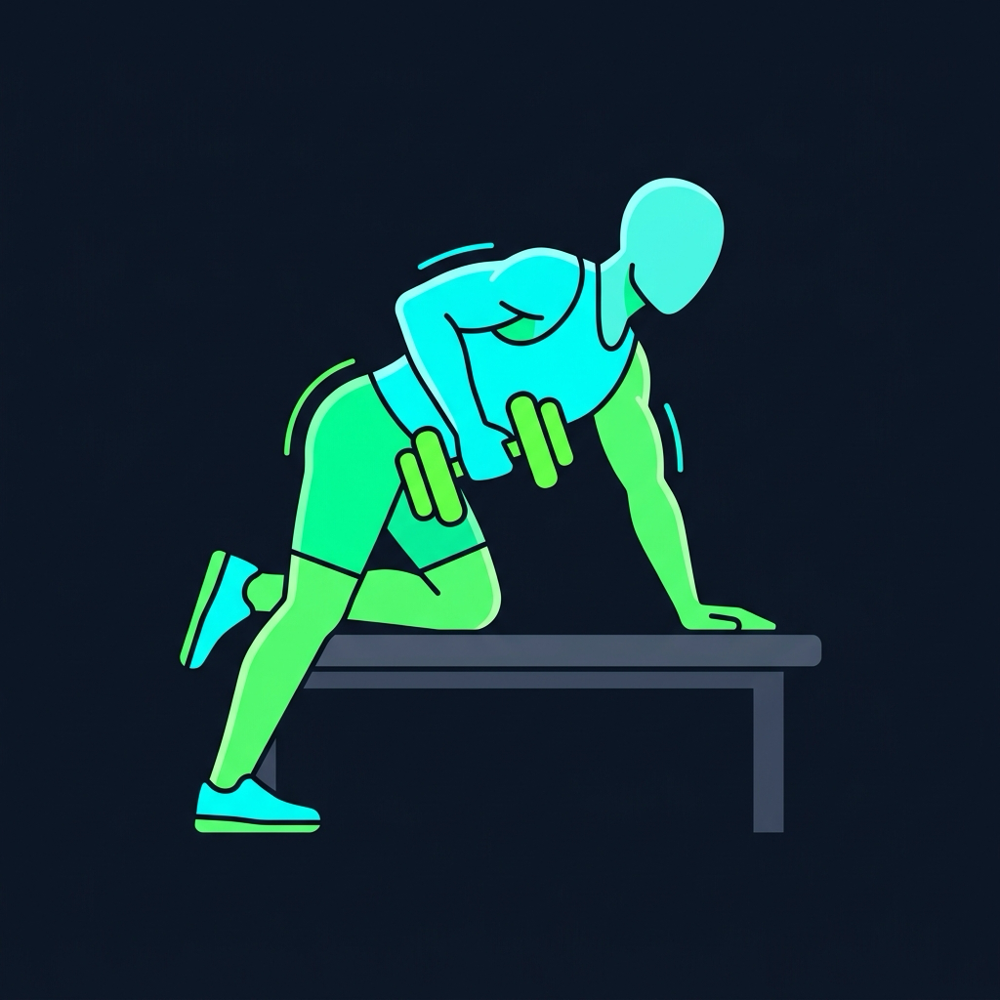
Crunches
CoreDisteso supino sul tappetino con le ginocchia piegate e i piedi a terra. Solleva solo la parte superiore della schiena e le scapole, concentrando la contrazione sull'addome.

Plank
CoreTenuta isometrica. Appoggia gli avambracci e le punte dei piedi sul tappetino. Mantieni il corpo perfettamente in linea come una tavola, attivando addome e glutei.

Russian Twists
CoreSeduto sul tappetino, busto inclinato all'indietro a 45 gradi. Ruota il torace e le spalle da un lato all'altro in modo controllato (opzionale: impugna un manubrio per aumentare il carico).

Wide-Stance Goblet Squat
Gambe e GluteiSedendosi e alzandosi con i piedi ampiamente distanziati, si stimolano gli adductors.
12-15 ripetizioni × 3-4 serie | Riposo 45-60 secondi
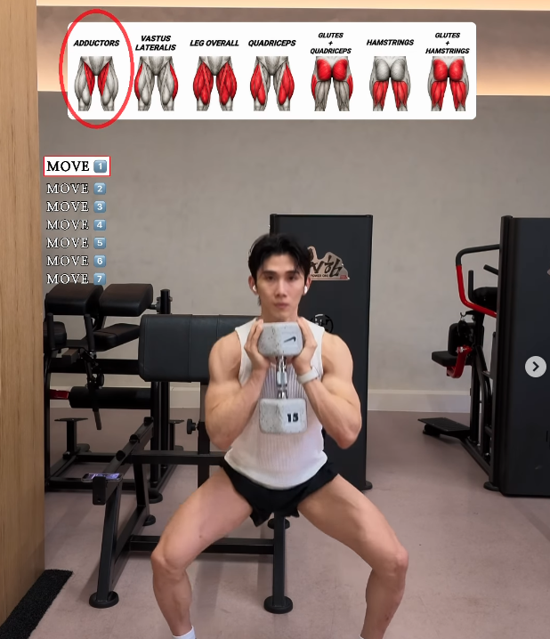
Narrow-Stance Goblet Squat
Gambe e GluteiSedendosi e alzandosi con i piedi ravvicinati, si stimola il vastus lateralis.
12-15 ripetizioni × 3-4 serie | Riposo 45-60 secondi
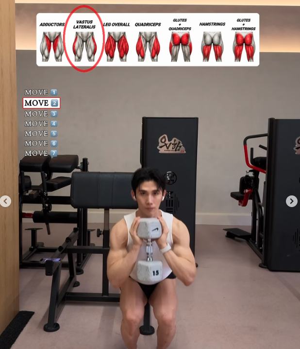
Standard-Stance Goblet Squat
Gambe e GluteiSedendosi e alzandosi con i piedi a larghezza standard, si stimolano le legs overall.
12-15 ripetizioni × 3-4 serie | Riposo 45-60 secondi
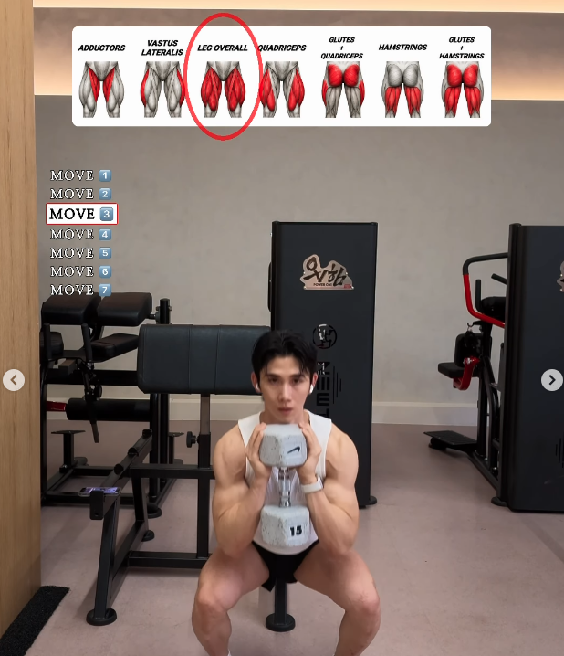
Lying Leg Curl
Gambe e GluteiPiegando le ginocchia e tirando il cuscinetto verso di sé, si stimolano gli hamstrings.
12-15 ripetizioni × 3-4 serie | Riposo 45-60 secondi
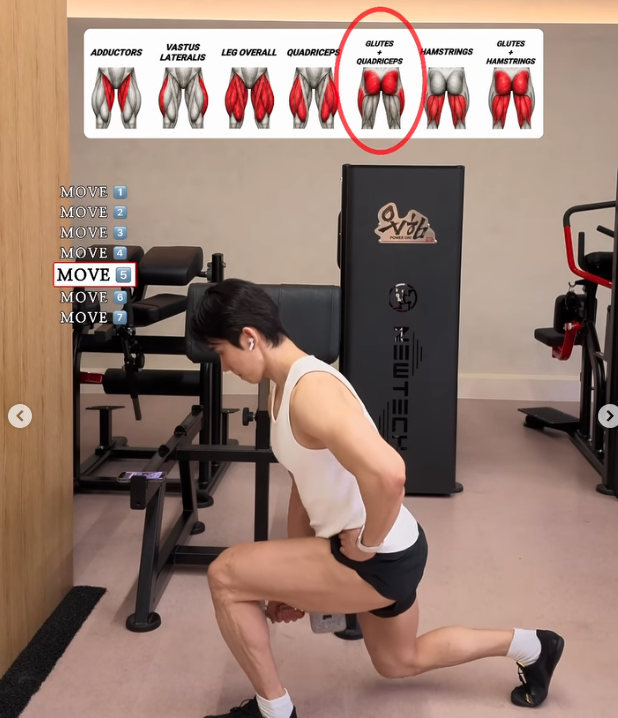
Dumbbell Stiff-Leg Deadlift
Gambe e GluteiPiegando leggermente le ginocchia, portando il bacino all'indietro, abbassando i manubri e poi ritornando su, si stimolano gli hamstrings e i glutes.
12-15 ripetizioni × 3-4 serie | Riposo 45-60 secondi
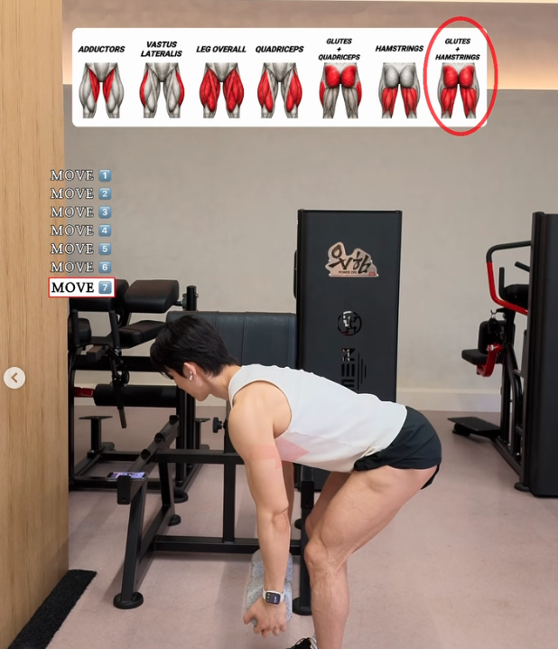
Dumbbell Bench Hip Thrust
Gambe e GluteiSiediti a terra appoggiando solo la parte alta della schiena sul lato lungo della panca piana. Posiziona un manubrio sul bacino e spingi i glutei verso l'alto fino ad allineare busto e cosce.
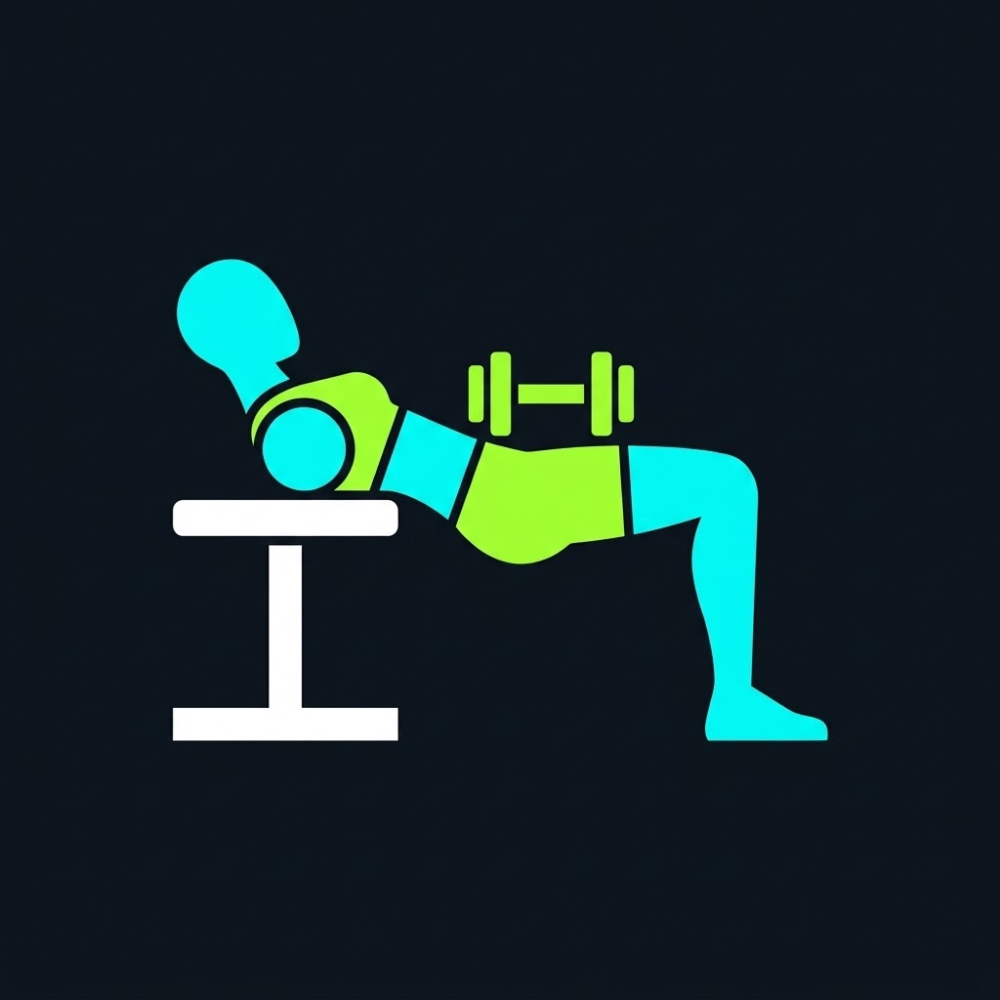